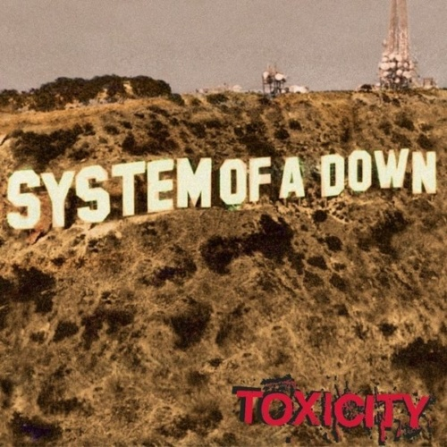

Reviews
Things Fall Apart
The Roots
The Specials
The Specials
Assume Form
James Blake
Hunky Dory
David Bowie
Let It Bleed
The Rolling Stones

Toxicity
System of a Down
Midnight Marauders
A Tribe Called Quest
FM!
Vince Staples
Honey
Robyn
Broken Politics
Neneh Cherry
Bottle It In
Kurt Vile
Queens of the Stone Age
Queens of the Stone Age
←
1
2
3
4
5
6
7
8
9
10
…
19
20
21
→
Sign up for monthly Audioxide roundups, if you like.